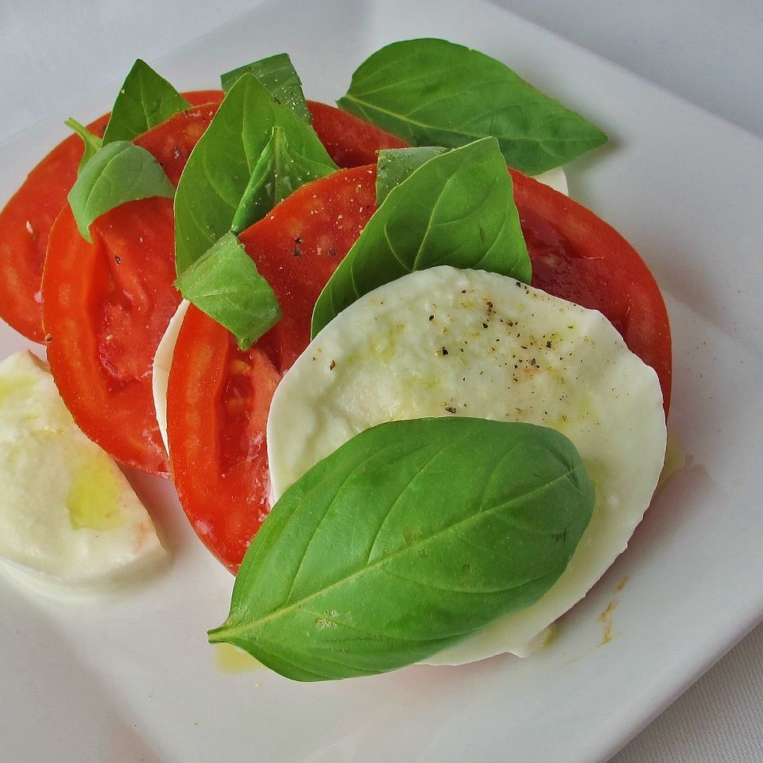

Insalata Caprese II

Red, white and green. The colours of the Italian flag and of every Italian’s passionate heart. And the colour of the classic Caprese Salad, which originates, as the name suggests, on the Isle of Capri.
Ingredients
- 4 large ripe tomatoes, sliced 1/4 inch thick
- 1 pound fresh mozzarella cheese, sliced 1/4 inch thick
- 3 tablespoons extra virgin olive oil
- 1/3 cup fresh basil leaves
- fine sea salt to taste
- freshly ground black pepper to taste
Directions
- On a large platter, alternate and overlap the tomato slices, mozzarella cheese slices, and basil leaves. Drizzle with olive oil. Season with sea salt and pepper.